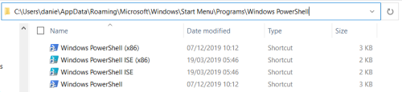

PowerShell
Powershell command from a Windows command prompt(cmd)
C:\> powershell.exe -Command “[command]”
Get Version of Powershell
Get-Host

Powershell 1 → Server 2008
Powershell 2 → 7/Server 2008 R2
Powershell 3 → 8/Server 2012
Powershell 4 → 8.1/Server 2012 R2
Powershell 5 → 10
Run Powershell as administrator
• Via Run Command Window
1) WinKey+R
2) Type powershell
3) Press Ctrl+Shift+Enter
• Via command line
powershell Start-Process powershell -Verb runAs
Powershell directories
• Default:
%appdata%\Microsoft\Windows\Start Menu\Programs\Windows PowerShell

• v1.0
To know the current environment architecture
[Environment]::Is64BitProcess

◇ 64 bit system
C:\Windows\System32\WindowsPowerShell\v1.0

◇ 32 bit system
C:\windows\SysWOW64\WindowsPowerShell\v1.0
List of useful Powershell commands
https://gist.github.com/jivoi/c354eaaf3019352ce32522f916c03d70
How Powershell is used during attacks:
https://docs.broadcom.com/doc/increased-use-of-powershell-in-attacks-16-en